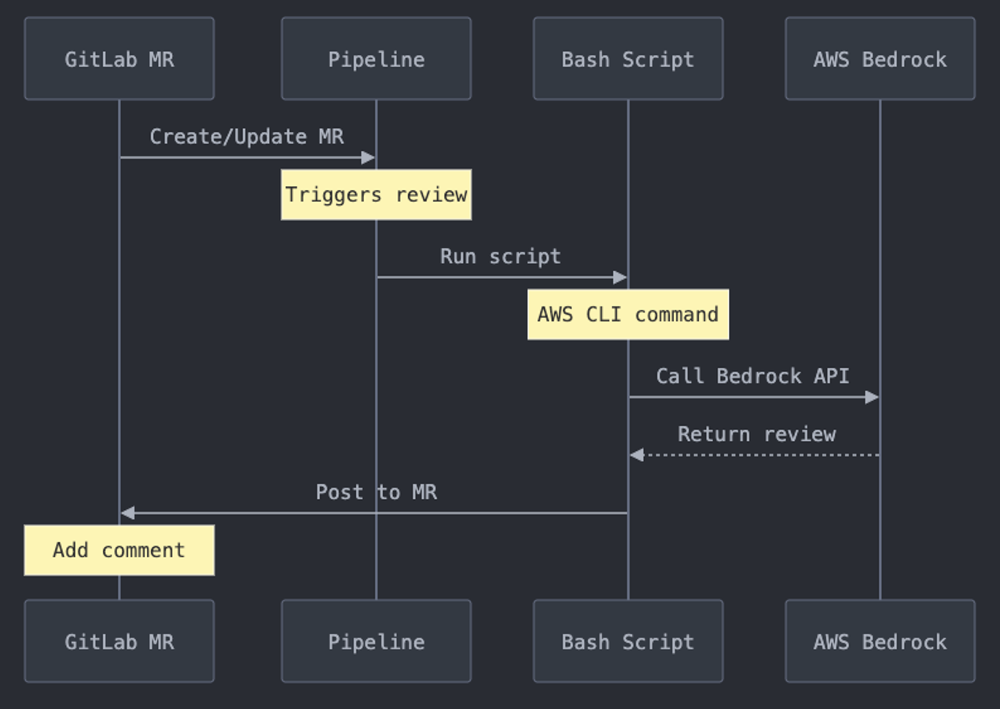
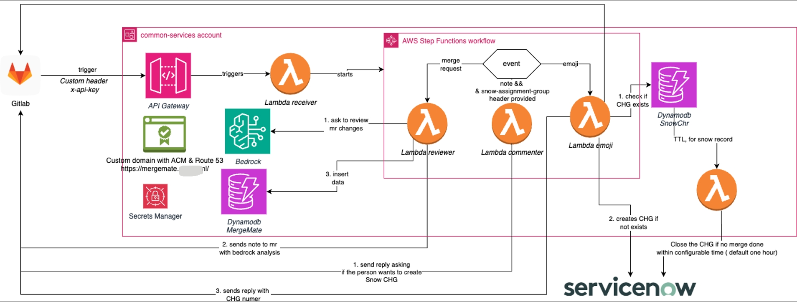

Building a Serverless Code Review Assistant with AWS Bedrock and GitLab
TL;DR: We built a serverless code review assistant that integrates AWS Bedrock with GitLab, automating code reviews while maintaining detailed metrics. The system evolved from a simple pipeline-based approach to a robust serverless architecture, significantly improving our development workflow.
The Challenge
Our team faced recurring challenges with code review oversights leading to production issues. Despite having multiple approvals, templates, and conditions in place, we needed a more robust automated solution. The key requirements were:
- Automated code analysis across multiple repositories
- Consistent review quality regardless of team or project
- Cost-effective implementation with clear usage tracking
- Minimal impact on developer workflow
- Scalable architecture for growing teams
System Evolution
Initial Implementation
Our first approach used GitLab CI pipelines directly:
Initial pipeline-based implementation with direct integrations
This setup quickly revealed several limitations:
- Managing scripts across 300+ repositories became a maintenance nightmare
- Pipeline failures would block developers unnecessarily
- No centralized monitoring or cost tracking
- Updates required changes across multiple repositories
Enhanced Architecture
Learning from these challenges, we redesigned the system with a serverless approach. This is a CDK stack that builds a GitLab webhook receiver with API Gateway and Route53 custom domain setup. The main logic runs through Step Functions which coordinates three Lambda functions for different tasks: merge request reviews, emoji processing, and comment handling. The data is stored in DynamoDB tables with TTL capabilities and stream processing for automated cleanups. It uses AWS best practices like API key authentication, CloudWatch monitoring, and proper secret management through Secrets Manager. The stack is nicely organized into separate constructs making it modular and maintainable.
Enhanced serverless architecture with centralized management
Core Components
1. AWS Integration Layer
At the heart of our system is a robust AWS helper class managing all cloud service interactions:
class AwsHelper:
def __init__(self, dynamodb_table_name=None):
self.region_name = os.environ["AWS_REGION"]
self.logger = logging.getLogger()
self.logger.setLevel(logging.INFO)
if dynamodb_table_name:
dynamodb = self.get_dynamodb_client()
self.table = dynamodb.Table(dynamodb_table_name)
def get_bedrock_client(self):
return boto3.client(service_name="bedrock", region_name=self.region_name)
def get_bedrock_runtime_client(self):
return boto3.client(
service_name="bedrock-runtime", region_name=self.region_name
)
2. Intelligent Review System
The MrReviewer class handles the core review logic with adaptive depth based on change size:
def generate_review_prompt(self, changes):
total_changed_lines = sum(
len([line for line in change.get("diff", "").split("\n")
if line.startswith("+") or line.startswith("-")])
for change in changes
)
if total_changed_lines <= 5:
base_instruction = """Please provide a very brief review of the following small code change.
Your review should be no more than 2-3 sentences long."""
elif total_changed_lines <= 20:
base_instruction = """Please provide a concise review of the following code changes.
Your review should be about 4-5 sentences long."""
3. Cost Management
Precise cost tracking helps teams monitor and optimize their usage:
def calculate_review_price(self, input_tokens, output_tokens):
input_price_per_1k = Decimal("0.003")
output_price_per_1k = Decimal("0.015")
input_cost = (Decimal(input_tokens) / 1000) * input_price_per_1k
output_cost = (Decimal(output_tokens) / 1000) * output_price_per_1k
return input_cost, output_cost, input_cost + output_cost
4. GitLab Integration
A Lambda function handles merge request events and integrates with our change management process:
def handler(event, context):
logger.info("Lambda function invoked")
try:
body = event
merge_request_id = body["merge_request"]["iid"]
project_id = body["project"]["id"]
discussion_id = body["object_attributes"]["discussion_id"]
reply = """
**Did you know that If this MR makes any production change,
Essent requires you to create a Change Request?** \n
This is a formal process to modify a product, system,
document or deliverable in a project."""
response = GitlabHelper().reply_merge_mate_note(
project_id, merge_request_id, discussion_id, reply
)
5. AI Integration
AWS Bedrock powers our intelligent code reviews:
def invoke_bedrock_for_review(self, prompt, bedrock, bedrock_runtime,
bedrock_model_name):
foundation_models = bedrock.list_foundation_models()
matching_model = next(
(model for model in foundation_models["modelSummaries"]
if model.get("modelName") == bedrock_model_name),
None
)
request_payload = {
"anthropic_version": "bedrock-2023-05-31",
"max_tokens": 4000,
"messages": [
{"role": "user", "content": [{"type": "text", "text": prompt}]}
],
"temperature": 1.0,
"top_p": 0.9,
}
6. Data Persistence
All review data and metrics are stored in DynamoDB:
def write_to_dynamodb(self, partition_key, data, bedrock_response=None,
error_message=None):
timestamp = int(time.time() * 1000)
item = {
"PK": str(partition_key),
"SK": str(timestamp),
"status": "success" if not error_message else "failure",
"timeStamp": human_readable_timestamp,
}
if bedrock_response:
input_tokens = bedrock_response["usage"]["input_tokens"]
output_tokens = bedrock_response["usage"]["output_tokens"]
input_cost, output_cost, total_cost = (
MrReviewer().calculate_review_price(
input_tokens, output_tokens
)
)
What is AWS Bedrock?
For our code review system, we leverage AWS Bedrock, Amazon's fully managed service for foundation models. Here's why we chose it:
- Serverless Integration: As a fully managed service, Bedrock seamlessly integrates with our serverless architecture, requiring no model hosting or infrastructure management
- Model Flexibility: Access to various foundation models from providers like Anthropic, AI21 Labs, and Cohere allows us to choose the best model for our code review needs (currently using Claude 3.5 Sonnet)
- Enterprise Security: Built-in security features like VPC endpoints, IAM-based access control, and AWS KMS encryption align with our enterprise security requirements
- Native AWS Integration: Direct integration with our existing AWS services (Lambda, Step Functions) simplified implementation and monitoring
- Cost Management: Pay-per-use pricing model fits our serverless approach, with detailed usage metrics helping optimize costs
# Example of our Bedrock initialization and model selection
def get_bedrock_model(self, bedrock_client, model_name):
try:
foundation_models = bedrock_client.list_foundation_models()
matching_model = next(
(model for model in foundation_models["modelSummaries"]
if model.get("modelName") == model_name),
None
)
if not matching_model:
raise ValueError(f"Model {model_name} not found in available models")
return matching_model
except Exception as e:
self.logger.error(f"Error getting Bedrock model: {str(e)}")
raise
What Are Foundational Models?
A foundational model is a large-scale deep learning model that has been trained on huge amounts of data. It can be adapted to many tasks because it learns broad knowledge and patterns. These models serve as a base for various applications, including text generation, question answering, and more.
How Large Language Models Work
Large Language Models (LLMs) predict the next word (or token) in a text based on context. They have been trained on large datasets of text so they can guess what comes next in a sentence. This guessing is the foundation for many applications, including chatbots and code reviews.
LLMs have parameters like temperature and top-k that control how they generate text:
- Temperature: Acts like a creativity slider. A low temperature (e.g., 0) makes the LLM pick the most likely next word each time, which can be very predictable. A higher temperature (close to 1) makes it pick less likely words sometimes, which can make responses more creative but also less consistent.
- Top-k: Controls how many top words are considered at each step. For example, if k=3, the LLM only considers the top 3 most likely words, ignoring other possibilities.
Key Features
- Webhook Processing: API Gateway with custom domain, rate limiting, and API key authentication for secure webhook handling
- Automated Pipeline: Step Functions orchestrating specialized Lambda functions for merge requests, emoji reactions, and comments
- Data Management: DynamoDB tables with TTL capabilities and stream processing for automated cleanups
- Observability: CloudWatch alarms for 4xx/5xx errors, detailed API logging, and X-Ray tracing enabled
- AI Integration: Amazon Bedrock integration with Claude 3.5 Sonnet for code reviews with proper IAM permissions
Lessons Learned
- API Pagination: Always handle API pagination properly - GitLab's /notes/ API default limit of 20 caused duplicate comments when MRs had more notes
- State Machine Design: Using Step Functions for orchestration provides better error handling and retry capabilities than direct Lambda chaining
- Webhook Filtering: Proper filtering of incoming webhooks is crucial - duplicate triggers from related tools (like MergeHappy) needed explicit handling
- CDK Constructs: Breaking down infrastructure into focused constructs significantly improves maintainability and reuse
- Resource Sizing: Lambda configurations need careful tuning - from 128MB for webhook processing to 2GB for AI review tasks
Future Improvements
- Model Selection: Adding support for multiple Bedrock foundation models beyond Claude 3.5 Sonnet, allowing teams to choose based on speed vs depth tradeoffs
- Prompt Customization: Enabling teams to customize review prompts per repository, programming language, or review type (security, performance, etc.)
- Cost Controls: Implementing repository-based quotas and model selection policies to optimize Bedrock usage costs
- Review Templates: Creating specialized prompt templates for different review scenarios (new features, bug fixes, refactoring)
- Advanced Filtering: Expanding webhook filtering to support complex rules like file types, change size, and PR labels
Conclusion
Our serverless code review assistant has significantly improved our development workflow by providing consistent, automated reviews while maintaining cost effectiveness. The evolution from a simple pipeline-based approach to a sophisticated serverless architecture demonstrates the importance of learning from real-world usage and adapting to team needs.